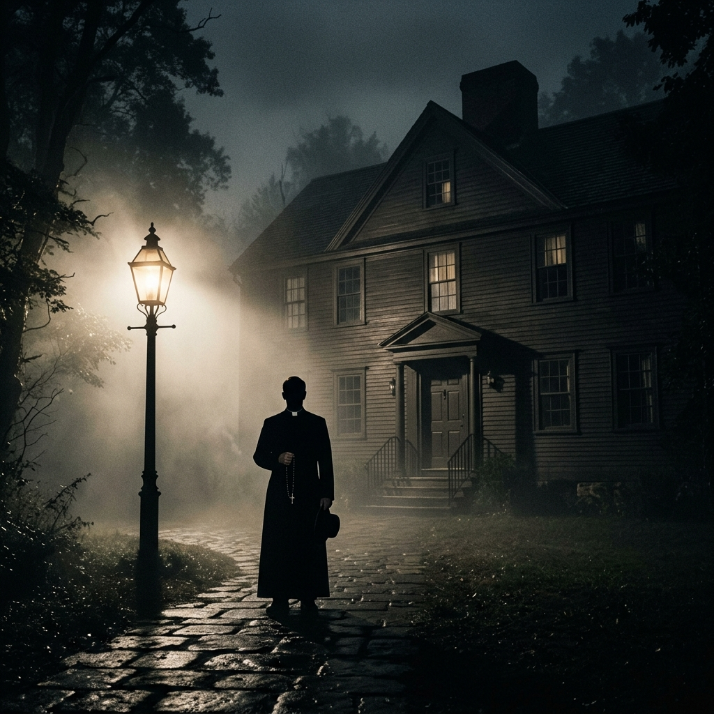

Le pietre miliari che hanno codificato e reinventato il rito della possessione sul grande schermo. Dalla fondazione del genere alle interpretazioni processuali, psicologiche e laiche.
Il film che ha sconvolto il mondo, rendendo il male carnale, tangibile e rivoluzionario.
Il processo teologico e penale al confine instabile tra psichiatria moderna e fede.
La figura dell'esorcista alle prese con lo scetticismo razionale in una Roma monumentale.
La nascita del cacciatore laico del male attraverso la strumentazione tecnologica dei Warren.
L'azione e lo spettacolo contemporaneo del male
Negli ultimi anni, il cinema horror mainstream ha rielaborato l'esorcista in una figura più dinamica e spettacolare. Dalla sella al motore di Russell Crowe in L'Esorcista del Papa all'intensa recitazione di Al Pacino in L'esorcismo di Emma Schmidt, scoprite come il genere è diventato un'arena d'azione e suspense contemporanea.
Esplora i Pop-Blockbuster